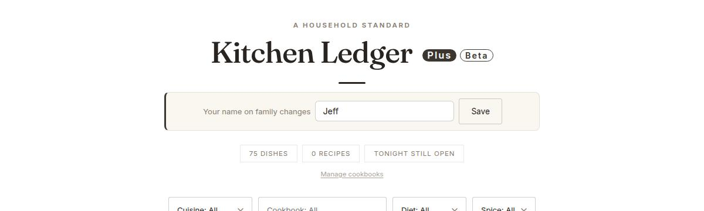
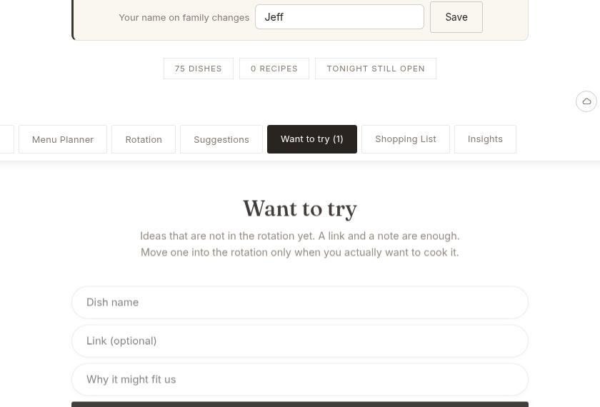
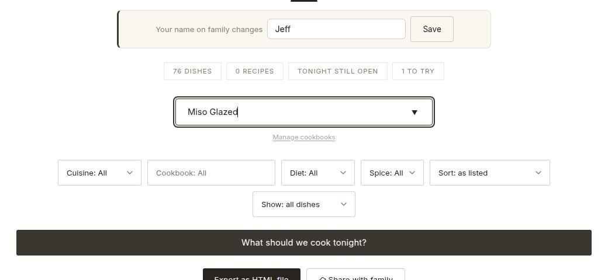
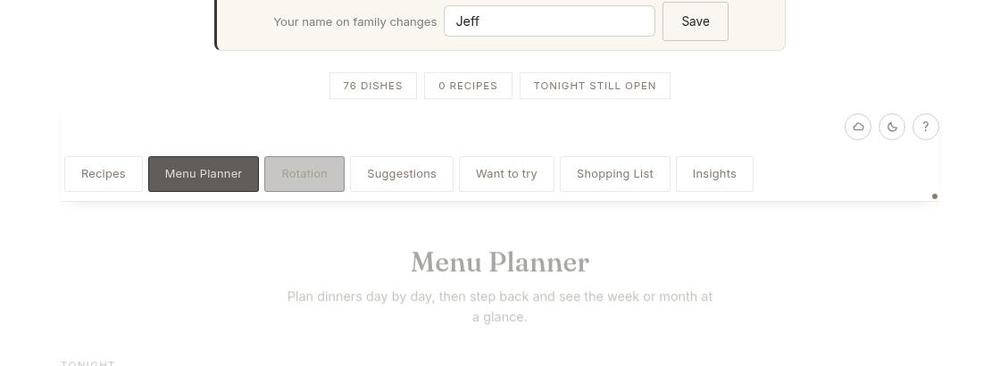
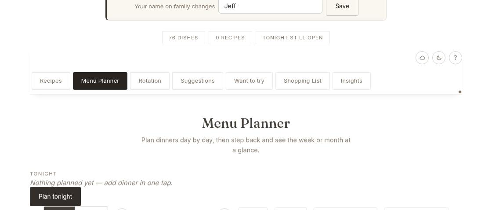
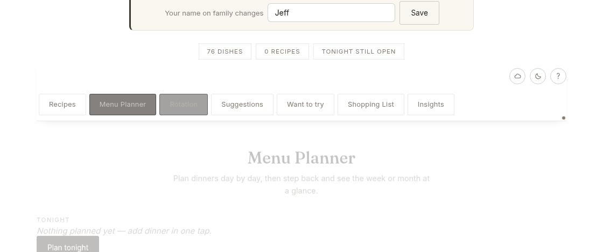
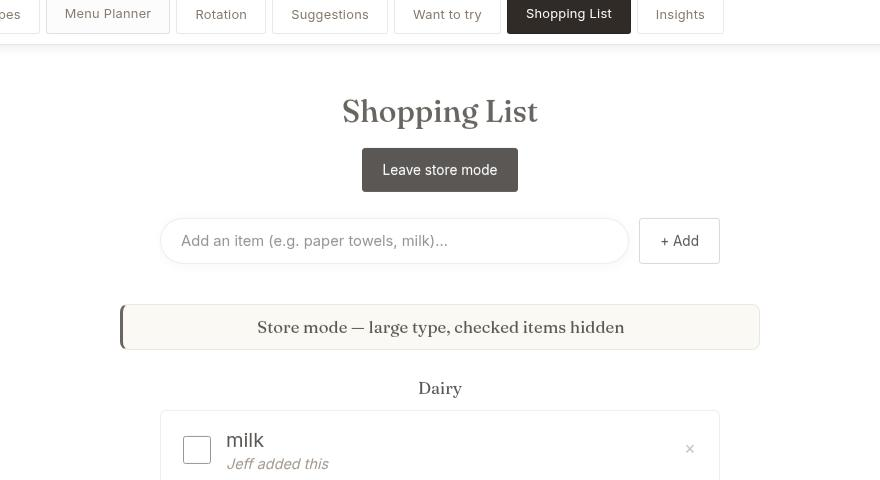
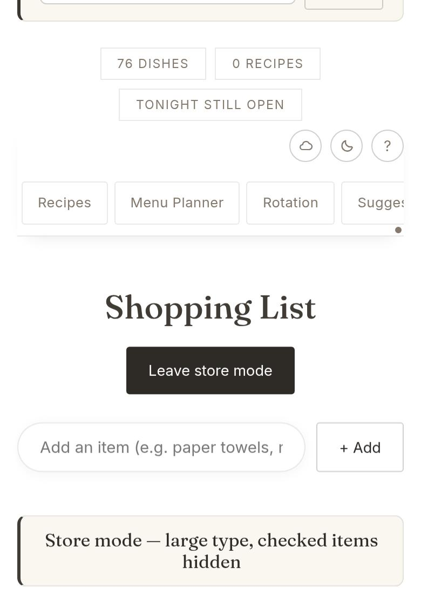

Family beta
A short deck for the gold KL Plus icon. The original Kitchen Ledger icon stays as it is.
Open Plus from the gold KL Plus icon. If that icon is already on the phone, close it all the way and open it again so this beta loads.
The pictures use the sample cookbook. After you restore your backup, the same buttons are there with your own dishes.
Have everyone reopen KL Plus before the next family sync, so a photo already on a phone stays on that phone.
1 · Your name
Type a name in the banner under the title and tap Save. A new dish, a planned dinner, and a grocery item will carry that name. Each phone keeps its own name.

2 · Want to try
The full recipe stays on the website. Plus keeps the name, the link, and your note.

3 · In the rotation
After you add it to the rotation, the dish shows who saved the idea. You can fill in the recipe later, the same way as any other dish.

4 · Repeat a past week
If the week on screen already has dinners, Plus asks before it replaces them.

5 · The copied week
Each copied dinner shows the name of the person who repeated the week.

6 · Favorites
Heart a dish in Rotation, or mark that Jeff likes it. Then, on the Menu Planner, tap Fill open days with favorites. Days that already have a dinner stay as they are. Plus starts with favorites you have not already used that week.

7 · Store mode
A new item can say who added it, such as “Jeff added this.”

8 · Photos and sharing
A photo still shows on the phone that added it, and a backup from that phone still includes it. During this beta the picture is left out of the family share, so a big photo is less likely to trip the size warning. Everyone still shares the recipes, the menu, the shopping list, and the Want to try shelf.
Inside KL Plus, open Share with family and tap Start sharing. That makes a new sync code. Send the family the Plus link and that new code. Keep the original Kitchen Ledger sync code in the original app.
